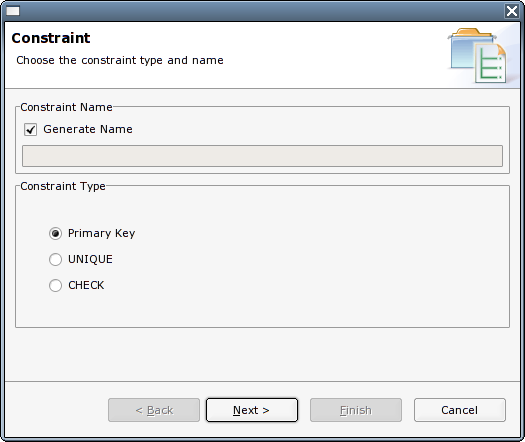
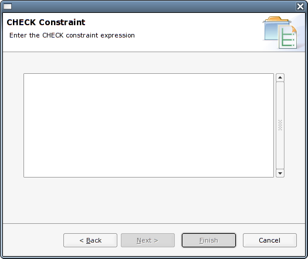

) in the
Constraints tab of the Table
Details view
) in the
Constraints tab of the Table
Details viewThe following table shows the constraint types defined by the SQL99
standard, along with the levels at which they may be applied (SQL99
also defines the domain level, which is
beyond the current scope of RMBench):
| Constraint Type |
Column Level |
Table Level |
| Not Null |
X |
|
| Check |
X |
X |
| Unique |
X |
X |
| Primary Key |
X |
X |
| Foreign Key |
X |
X |
Currently, RMBench supports the following
constraint types:
As described above, the Constraint Dialog allows you to create primary key, unique or check constraints. The creation of
a primary key constraint through the Constraint Dialog is only
supported if a primary key does not already exist. The preferred way of
creating a primary key is the Table Details
View.
Constraints can be created in 2 ways:
) in the
Constraints tab of the Table
Details viewIn either case, you will be presented with the constraint definition dialog:
The first page allows you to determine the constraint name and to
choose the type of constraint to create (Note that the Primary Key
option is only displayed if a primary key does not already exist).
Depending on the choice on this page, the Next
button will take you to one of the following pages:
The constraint definition page for primary keys and unique keys
looks similar, with the only exception being the dialog title
The list shows the available columns from the underlying table. You
can choose the columns that make up the key, and determine the
sequence. Already selected columns are always shown at the top of the
list. Note that upon clicking a checkbox, the respective column is
moved to the bottom of the list of selected columns. You can change the
sequence of the selected columns by use of the buttons to the left of
the list.
The constraint definition page for check constraints shows a simple multiline edit field for entering the constraint expression. There is currently no validation performed on the entered text.
